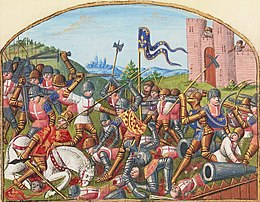

Ce mémoire est rédigé par Aguiriano Félicité et dirigé par Frédéric Boutoulle.
Ce mémoire entre dans le champ de plusieurs domaines scientifiques :
Ce mémoire a pour objectif d'analyser la présence d'un groupe aristocratique dans la vicomté de Castillon, de qui se compose ce groupe, de ses liens entre eux et avec leur vicomte, de leurs habitats et son évolution. Tout cela durant une période charnière de la vicomté : en effet, à la fin du XIIIe siècle, le vicomte de Castillon est exilé et une nouvelle famille parvient au pouvoir. Cette nouvelle famille, celle des Grailly, est très puissante et ne cesse, grâce aux mariages de ses membres, de s'accaparer de nouveaux territoires en Guyenne. La vicomté de Castillon n'est plus qu'un territoire comme un autre. Comment le groupe aristocratique évolue-t-il face à un tel changement ?
La vicomté de Castillon a été peu étudiée par l'historiographie. Elle a été l'objet surtout de quelques érudits au XIXe et au début du XXe, qui manquent parfois de méthodes scientifiques.
